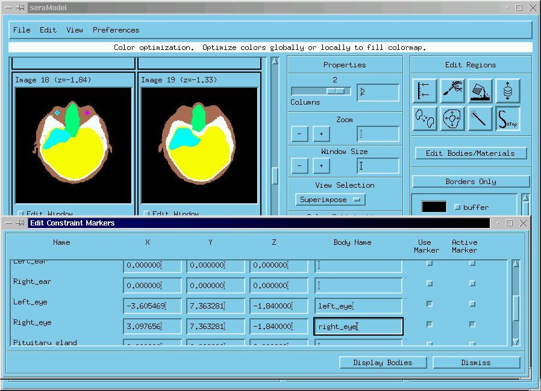

SERA:
Simulation Environment for Radiotherapy
Applications
User's Manual
Version 1C0

SERA:
Simulation Environment for Radiotherapy
Applications
User's Manual
Version 1C0

5. Image Editor (seraModel)
After the image information has been prepared, image editing is usually the next step in the treatment planning process. Figure 5.1 shows seraModel's user interface in the Edit mode, along with annotated widget components. The purpose of the seraModel module is to break an image set easily and rapidly into regions of interest, and to create the model geometry. This process is described in Section 5.3.2. The image pixel matrix used for display in this program has been generalized to work on systems with different color depths and to view images at an arbitrary zoom level, in an arbitrary window size, and with an arbitrary number of columns.
Figure 5.1. seraModel in Edit Mode.
seraModel provides many useful image operations, including manual and semi-automatic (threshold) definition and generation of univel-based regions of interest that form the geometry used by the radiation transport simulation. Various image processing tools are provided to aid in the manual definition of these regions, including region copying, scaling, overwriting, and painting by fill or borders. Threshold-based segmenting, 3D region growing, body copying, and automatic target definition operations are also provided.
Finally, the program will save user-defined
regions in a uniform volume element format (.uv/.uvh)
to describe both the geometry of the model and the assignment of the physical
properties to the univels.
The File menu has the following parts which will be discussed in turn in following subsections:
With this selection, the user can open pre-existing image sets, and either compressed (gzip) or uncompressed (.uv/.uvh) body files. Image files can be opened so that they either replace or overlay an existing set of images. Also, the user can open the fiducial and constraint marker files, as well as the files describing the body and material properties. When opening a body file, the user is prompted to enter the fiducial and constraint marker files.
Figure 5.2. Sera File selection widget.
The user has a choice of using the standard Motif file selection widget, or the sera file selection widget, which maintains a list of recently used files for convenient and quick access. The sera file selection widget is shown in Figure 5.2. The last file accessed is highlighted and set as the default file to load.
This option saves either the modified image files, or the new or modified univel (.uv/.uvh) files. The user has a choice of using the standard Motif file selection widget or the sera file selection widget described in section 5.1.1.
From this selection, the user can run the other modules of the SERA system. This selection is further discussed in Section 3.9.1.
5.1.4. Remove Bodies Selection
This selection removes all of the defined bodies while retaining the current image set. The user must confirm the removal action.
5.1.5. Restart Program Selection
This option resets the program to its initial state. All images and bodies are removed without a need to exit the program. The user must confirm this action.
This selection closes the module with confirmation
notice. All other currently running modules are unaffected by this
action.
The Edit menu has the following parts which will be discussed in turn in following subsections:
Allows the user to undo recent image editing.
5.2.2. Relabel Regions Selection
It is very important that every pixel be assigned a body (label) in the model to assure a reliable transport simulation. The relabel selection allows the user to reassign bodies using the widget displayed in Figure 5.4. Matching a highlighted selection in the left hand column with one in the right hand column changes the body assignment. For instance, highlighting unlabeled in the left hand column, then highlighting buffer in the right hand column, will assign all unassigned pixels as buffer.

Figure 5.4. Relabel widget selection.
The user needs to exercise a great deal of caution when performing this operation. buffer is a special body type that should only be assigned in the outermost areas of the image space. If buffer is assigned to any body inside the outermost body (in the case of the head, this would be the scalp), an error in particle tracking could occur.
5.2.3. Remove Bodies from Image Range
Allows the user to remove selected bodies from the image range.
With this selection, the user can adjust the contrast, gamma correction, and colormap used to display the images. This is useful during manual editing, when trying to discern certain objects in the image. Unfortunately, there are usually no set rules for setting the values in this widget (see Figure 5.5).
Figure 5.5. Colormap widget selection.
The user will have to experiment in order to obtain a good result. We have noticed that when using CT images from the bone window, the soft tissue is enhanced when the background is set to 65 and the saturation is set to about 150. This widget will be improved in future versions.
5.2.5. Constraint Markers Selection
Constraint markers will be used to control dose to healthy tissues. Their location can be specified in seraModel and read by seraMC. After the transport calculation is complete, seraMC will compute the flux at the marker locations and, given the boron concentration and RBEs specified in the edits, will compute the dose. Constraint markers will have an associated tolerance dose, and seraMC will warn the planner when this tolerance dose is exceeded, so that the plan specifications can be altered to keep the particular structure within desired limits. Default constraint markers are stored in the file Constraint.txt, which must be read by seraModel. Figure 5.6 shows an example for the left eye and the right eye. In this example, the left eye has been specified by a mouse click at the proper location and the right eye is being specified. The right eye marker is still active and can be moved with the cursor before establishing its final location. The body is specified to allow the marker to associate the marker with material properties, including boron ratio relative to blood, and appropriate RBE factors.

Figure 5.6. Constraint Marker selection.
5.2.6. Fiducial Markers Selection
The patient may be positioned with respect to the beam with the aid of fiducial markers. Fiducial markers are stored in the file Fiducial.txt, which must be read by seraModel. In the case of MRI, for example, the fiducial marker may be a vitamin E capsule located at a tattoo mark. The location of the fiducial marker will be read by seraMC, and the coordinates relative to the beam entry point will be calculated by seraMC and used for the positioning process. Otherwise, positioning requires a three-dimensional translation from patient geometry to beam geometry, which is tedious and quite error-prone. Figure 5.7 shows fiducial markers set for a sample patient geometry.
Figure 5.7. Fiducial Marker selection.
5.2.7. Sort Images by Z-Value Selection
In the unlikely event that the user has an image file set that is in random order with respect to the axis of the image set, this selection may prove to be useful. Usually, the user will correct this problem with the seraImage module.
5.2.8. Reverse Image Set Selection
If the images are ordered along the axis of the image set in the opposite direction from that which the user requires, then this selection should be used. For an axial image series of the head, the radiation transport model expects the images to be in increasing order from the bottom to top (inferior to superior). If the images are ordered in the opposite direction, this selection will correct the problem.
Allows the user to set the orientation of the
row axis, the column axis and the slice axis.
The View menu has the following parts, which will be discussed in turn in subsequent subsections:
The properties for the seraModel widget (see Figure 5.1) are displayed in the column to the immediate right of the image display area. This selection is toggled on/off. Normally, the square button to the left of this selection should be in the on (depressed) position. If the user requires more screen space to display the images, then the button should be set in the off (outward) position. The setting for this selection can be saved in the preferences menu.
The properties column contains buttons and sliders which affect how the images and regions are displayed. The user can adjust widget and image sizes, the number of columns used to display the images, whether to display only images, regions, or regions superimposed on images, pixel optimization, window movement synchronization, and image removal. These adjustments can be quite time consuming when operating on a large set of images.
The main purpose of this selection is the creation of the univel geometry for the transport model, which is at the heart of the modeling process. It therefore requires more explanation than any other seraModel selection. This selection is toggled on/off, like the properties toolbar selection. When the selection is in the on position, the Edit Regions column will appear on the far right side of the widget, as shown in Figure 5.1. This selection has seven region editing modes and one setup mode. When defining bodies for a model, the user should remember two very important considerations:
1. All pixels must
be assigned a body (region).
2. The buffer region
must surround all other regions and cannot be assigned to any interior
pixels.
The code will generally warn the user when there are unassigned pixels. Beneath each image there is the Edit Window button, which will allow the user to enlarge the image to reveal more detailed pixel information. The user can scroll through the entire image set and determine where the unlabeled pixels are located. This feature is also very useful for defining regions, either when thresholding or when manual editing.
Currently, seraModel will not guard against improper buffer definition, but if the user follows the prescribed editing procedures, this should not be a problem. There is no substitute for careful editing.
In order to make body definition complete and convenient, seraModel provides several editing modes, which are described in the following subsections. The user need not, and should not, use all of these modes, but it is a good idea to be aware of these capabilities without being overwhelmed by them. As the user becomes experienced, certain editing patterns should develop that best suit the user and the image quality available.
The user will soon find that one of the most important buttons in seraModel is the undo button, located on the bottom right hand side of the edit section. Undo can also be accessed by using Edit->Undo. seraModel stores in its memory queue each edit operation, in order from first to last. Each time the user presses this button, the last edit operation is undone and removed from the memory queue. The utility of this will become obvious to the user almost immediately.
Setup is the default mode of the edit regions selection. Setup is a good place to include all of the bodies which will be used in describing the model, and to assign a material type to each of the bodies through the Edit Bodies/Materials button in the Edit Regions column. Below the Edit Bodies/Materials button, there is a button labeled either Borders Only or Filled Regions. This button is available to all of the edit modes; it is used to set the region display mode. The Borders Only mode displays only the outer boundary of the region, so that the image underlying the region fill values can be revealed.
The color area next to the body name in the Edit Regions column is the color used to display that body on the images. The user can change the color by pointing and clicking in this color area. A popup widget will appear with a color palette, adjustable color mixing sliders, and fixed color buttons. All of these settings can be saved for subsequent modeling sessions by using the Preferences selection described in Section 5.4.
This mode works best when defining regions that have pixel values distinct from adjacent regions, as when defining scalp and skull in some CT series. Even in these cases, pixel value ambiguities occur between low density regions, such as the sinuses and the area surrounding the scalp (buffer area). This mode is less useful when working with MRI images. Even so, we have provided this mode because when it works, it will save modeling time, and this is especially true when you have an image set with high contrast, uniformity, and low noise. As SERA matures, we plan to develop and implement automatic (unsupervised) segmenting algorithms, but the methods we have examined thus far are less efficient than manual editing, chiefly because of the computation time resources required by these methods.
Figure 5.9 shows seraModel in threshold
mode, with some sinus and skull regions defined. Thresholding works
by defining a region as those pixels in an image with intensity values
bounded by minimum and maximum pixel values. For 8-bit images, these
values range between 0 and 255. In Figure 5.8, we are defining the
skull as those pixels ranging between 187 and 238. This can
be accomplished by either setting the sliders located on the right hand
side of the figure at the desired range, or by using the mouse buttons
to determine the range. This can be done by observing the mouse button
functions as indicated in the bottom info section of the seraModel.
Figure 5.8. Thresholding mode selection.
Passing the cursor over the region in the image, while holding down the middle mouse button, will set the threshold range. Then, to fill in the region definition, while the cursor is in the region to be thresholded, press the left mouse button. This will take some experience to use effectively, and, as stated earlier, thresholding has limited applicability, working best with certain CT image sets.
Despite all of this, the thresholding mode is probably the best place to start defining some of the regions, like the buffer. Because the buffer, which must be distinct from all other regions, has pixel values similar to some of the low density regions, such as sinuses, a simple mapping of all low density pixels to the buffer will not work. Figure 5.9 shows the Edit Window while in threshold mode.
Figure 5.9. Edit Window while thresholding.
The mouse button assignments are shown in the bottom information section of the main seraModel window. Dragging the cursor through the buffer area of the image, while holding down the middle mouse button, will set lower and upper threshold values along the line shown in the buffer area of Figure 5.10. The threshold sliders will be automatically set following the release of the middle button. Alternatively, the user can set the values by moving the sliders. Once these values are set, the user can threshold the currently displayed image, or all of the images in a pre-specified range, by setting the appropriate radio button underneath the sliders.
There is a second radio button labeled Fill Connected Only. This button will only attempt to threshold contiguous regions of the specified pixel range, and it should be set to the on position when defining the buffer. When applying the fill threshold operations to the entire image range with Fill Connected Only set, the user should be careful to note that the filling is based on the cursor position in the reference image, and this may not produce the desired effect in the other images in the range. If this is the case, the user should try unsetting Fill Connected Only or Apply to Image Range. In the threshold mode, with the right mouse button depressed, the Fill Neighbor Range slider is operative and will fill the image with current body based on the pixel value ( +/- the fill neighbor range value) at the cursor location.
After setting the low and high threshold sliders, position the cursor in the buffer area and press the left mouse button to fill the buffer area of the image(s) with the buffer region. The Fill Connected Only mode should prevent buffer material from being assigned to the voids inside the image area, if there are no penetrations into the image area caused by surface aberrations. Voids inside the image area which have the same threshold range as the buffer can now be assigned. If the user wants to get all voids within the image area assigned at one time, he should make sure the Fill Connected Only mode is not set.
At this point, it is worth noting several of the Edit Window functions that are especially useful during thresholding and manual draw operations. From any of the Edit Windows the user can:
Figure 5.10. Pixel Mapping widget.
Selecting the "Pixel Mapping" button will display the pixel mapping widget shown in Figure 5.10. The widget is used to map a pixel range to a body. Pixel mapping can be used to define bodies with well defined pixel ranges, or it can be used in conjunction with thresholding to fill in the remaining pixels. To map a pixel range from the map to a body, first select the body in the right side of the widget, move the cursor into the pixel mapping histogram display, and, while holding down the left mouse button, drag the cursor through the desired pixel range. Once the pixel ranges are assigned, selecting the Apply Pixel Mapping button will apply this mapping to the current image range.
This is the simplest and most robust method for defining bodies. It is also the most tedious. While in the manual draw mode, the user can define any body with one of five paint brush sizes. The brush sizes are selected by placing the cursor in the appropriate brush size icon (see Figure 5.11) and pressing the left mouse button. Once the brush size icon is highlighted and a body is selected, the user can move the cursor to an image and draw the body outline using the left mouse button, as with many popular paint programs. The middle mouse button is used to erase, and, once the border is defined, the right mouse button is conveniently used to fill in the region.
The overwrite option box allows switching between the options:
Figure 5.11. Manual Draw mode selection.
While the user can draw into any of the image windows, use of the Edit Window is highly recommended, because of the features outlined in section 5.3.2.2. The authors recommend that the user become skilled with this mode by experimentation and liberal use of the undo button. In the long run, this skill will save considerable modeling time.
This feature is used to fill regions bounded by previously defined boundaries. In the Fill mode, as in all other seraModel modes, the bottom information area will show how the mouse buttons are mapped to the mode operations. The left mouse button will make an educated guess at the filling body. For example, the thresholding operation can miss pixel labeling when defining bodies, such as the skull. The user can conveniently fill in these missed pixels with this operation. Once some bodies are defined, the middle button can be used to fill inside or between these bodies with a selected body. In the Fill mode, the right mouse button will display a filled region with only its inner and outer borders.
As with most other semi-automatic body definition strategies, this one works best with images containing narrowly defined pixel intensities. Once a body is defined in one slice (the Base Growth Index), this operation will try to define that body in the range set by the sliders shown in Figure 5.12. At this time, the Base Growth Index must be within the range.
Figure 5.12. 3D Grow mode selection.
If the Overwrite button is selected in the grow operation, it will replace previously defined bodies within the grow volume. Normally, the overwrite button will not be selected.
3D Grow has four methods that can be used:
When there are small slice-to-slice variations in the size and shape of a body, this feature may be time saving. Once outlined and filled, a body may be copied from any slice to any other slice, using sliders as shown in Figure 5.13. Like manual draw, this mode has the overwrite option.
Figure 5.13. Copy Body mode selection.
The user can show how the copy operation appears and can adjust the position, size, and width of the copied body before applying the operation. This feature seems to work best with tumor and brain bodies. Once applied, this operation can be undone with the undo button.
For many tumor types, tumor cells can be found outside the main tumor mass. The main tumor mass is enhanced in the image, but the tumor cells outside the main tumor mass are not enhanced. This robust feature is used to define the target volume containing the non-enhanced part of the tumor surrounding the defined tumor object. Because the target volume usually only occurs in the brain region, it is important that the Make Margin operation is the last edit step, so that brain can be the only region overwritten.

Figure 5.14. Make Margin mode selection.
The Make Margin mode, shown in Figure 5.14, will create a region of a specified thickness surrounding the Source Region, with the thickness applied in three dimensions. It is important to note that the Source Region may be more than one body, e.g., tumor and edema.
The wand tool is a thresholding tool like the Thresholding Mode; however, the wand tool uses the pixel value underneath it to threshold. It has three different uses depending on which button is pressed:
When the cursor passes over some of the buttons in the main window, a brief explanation of those buttons will appear in the message area, if this selection is set.
5.3.4. Bottom Information Selection
If the Bottom Information item is selected, the bottom portion of the main widget will contain information regarding the mouse button mappings, the location button, and the image range applying to certain operations, such as thresholding.
5.3.5. Cross-Section Tool Selection
The cross-section tool shown below in Figure 5.15 provides an "at a glance" view of the image and body information within the model. The user can choose views along any of the three principal axes.
Figure 5.15. Cross-Section tool widget.
5.3.6. Intensity Histogram Selection
This selection, illustrated in Figure 5.16, shows either the pixel distribution of an individual image, or the entire image set. It may be of value in showing the image definition and the suitability of the various edit modes for the image set.
Figure 5.16. Intensity Histogram widget.
5.3.7. Region Volumes Selection
The Region Volumes widget, illustrated in Figure 5.17, shows the volume distribution for the current model. It can reveal gross inconsistencies in the model and show if there are any unlabeled regions remaining in the model.
Figure 5.17. Region Volumes widget.
The user can customize any of the features contained in Figure 5.18 for subsequent use in seraModel by selecting the button adjacent to the preference.

Figure 5.18. Preferences menu.
Autosave Options change how autosave works. If autosave is on, seraModel will automatically save the current regions periodically to disk.
Figure 5.19. Autosave options.
If the file has not been named yet the autosaved files will be saved at $HOME/sera1/autosaved_files/autosaved_regions.uv and $HOME/sera1/autosaved_files/autosaved_regions.uvh (i.e., the default autosave directory plus the default autosave filename plus .uv and .uvh). The first autosave will take place five minutes after the program starts, and subsequent autosaves will occur every five minutes thereafter. Autosave is on since the button to the right of Toggle Auto Saver is pressed.
5.5. Suggested Modeling Steps for BNCT Treatment Planning
There are many ways to develop the patient model using seraModel. This section discusses steps we have found useful for developing a model. We are sure that some resourceful users will come up with better modeling strategies than we suggest here, and, if they are kind enough to share them with us, we will keep this section updated with their comments. An accurate model can be constructed with an image separation of 4mm along the transverse direction. A finer resolution will increase the workload and require more computer memory with a diminishing return on accuracy. When modeling lesions or objects that are less than 4mm along the transverse direction, it will be necessary to use a finer resolution image set. It is important to note again that the basic property of the univel represenataion is that image transverse spacing must be uniform in order to achieve high performance.
Because CT and MRI image sets are fundamentally different with respect to how the pixel intensity values are derived, it is necessary to consider separate modeling steps for each. CT images have high geometric fidelity, low image noise, and good bone definition, but poor soft tissue contrast. MRI images provide excellent soft tissue resolution, but bone information must be inferred, and the images are usually noisy. Segmenting MRI images using thresholding is of limited value. In time, we hope to include the capability to register both image types, and allow the modeler to work with both simultaneously. In future releases, we will also be providing image filtering functions in the seraImage module, which can be used to clean up noise and accommodate higher contrast pixel values; this improvement should extend the usefulness of thresholding. The tradeoff would be some loss of image fidelity.
As a general rule, the modeler should try to assign contrasting colors to each body. The buffer body should stand out among all others, so that it can be distinguished when found in the image area. The Edit Window allows body definition at the resolution of an individual pixel, and it can be used to detect unlabeled and improperly assigned pixels. This is a good way to detect if a buffer pixel crept into the image area while thresholding. When first learning seraModel, the modeler will, and should, make generous use of the undo button.
5.5.1. Suggested Modeling Steps Using CT Image Sets
If there are no pixel ambiguities, and the pixel value ranges of each body are known, then the modeler should use the Pixel Mapping button of the thresholding option, make the body assignments to the pixel ranges, and apply pixel mapping; then the model is complete. Otherwise, remembering to frequently save the .uv/.uvh files during the modeling steps, the modelere should try the following:
5.5.2. Suggested
Modeling Steps Using MRI Image Sets
Until we can find or develop effective automated segmenting techniques, defining bodies in MRI images will be dominated by Manual Editing, Wand tool and Filling. The Wand tool is fairly effective on brain, tumor, and sometimes skull. If the image set has high signal to noise ratios, or can be effectively made so, the user may be able to use thresholding to define the very low (buffer, sinus) and very high (edema, tumor) signal regions making sure the Fill Connected Only state is set on. The modeler should try thresholding, followed by Manual Edit touchup, using experience as a guide, for unfiltered MRI image sets.